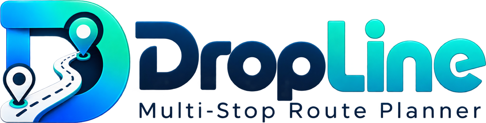

Add your stopsChoose how to add the delivery addresses for this run.
No stops match your search.
Your routes
No routes yet. Create one for today's run, then add stops by typing, scanning the paper run sheet, or importing the manifest.
Phone permissions
Location…
Notifications…
DropLine · Made with ♥ by Enterprise Analytic
Welcome
Plan, optimise, deliver
Add your stops, let DropLine put them in the fastest order, then drive with spoken directions. Here's how it works in 30 seconds.
25Stops
1 h 23 mDrive
3:45 pmFinish
Step 1
Create a route
Make one route for each run or day. Tap ⋮ on a route to rename it, copy it for tomorrow's run, or delete it.
Create route
Run Fri, 23 OctIn progress
23 Oct 2026 · 53 stops · 13 delivered
25%
Step 2
Add your stops
On a new route, choose how to add the addresses: type them, scan the paper run sheet page by page, or import the manifest. Add more later with the round ＋ Add stops button.
Step 3
Optimise & start
Tap Optimise route for the fastest order. The map shows your route, and every stop gets an arrival time plus a finish time (leaving later? set Leave at in Route details). Tap a pin to jump to that stop. Then tap Start delivering: directions and the map are saved for no signal automatically.
Start deliveringRe-optimise
Step 4
Deliver
Navigate gives turn-by-turn voice directions; tap Hide to see the whole map. Mark each stop Delivered, Failed (pick a reason) or Skipped and the next stop comes up. Tap a stop to add notes or mark a pickup.
Mark as DeliveredMark as FailedMark as Skipped
Step 5
Finish & report
When every stop is done you get a run report. Save or send it as a PDF, or share a short summary with your depot. A failed stop can go back on the run with Try again.
23Delivered
2Failed
0Skipped
PDF reportShare summary
Last step
Allow access
DropLine uses your location to start routes from where you are, and can let you know when a download or your run is finished.
Open directions in
Turn-by-turn directions open in the app you choose. DropLine's own Navigate button keeps working too.
Test location
For testing outside Australia. DropLine will act as if the phone is in the city you choose: start from my location, nearby search and offline addresses. To see moving navigation, use ⋯ → Simulate driving.
Offline addresses
DropLine quietly saves the official addresses for the area around you and for every stop on your routes, so address search keeps working with no mobile signal. Nothing to do: it happens by itself and old areas are cleared after 3 months.
Delivering across a whole state?
Finding your state…
Which states do you deliver in?
Address search and offline addresses use these states. Automatic picks the state you are in (and the next state near a border).
Create route
Route
Delete this route and its stops?
Crop the page
✓ Page edges found. Drag the 4 corners to the edges of the page, or around just the addresses. Then tap Done to load the addresses.
Scan page 1
Photo scanning uses Google's on-device text recognition, which works in the DropLine Android app.
After downloading, open the file to install. Android may ask you to allow installs from your browser.
Photograph one page at a time, in good light. Next you crop it: the page is found and straightened for you, like a document scanner. Works for the courier run sheet and for any printed address list.
More options
Discard all scanned pages?
Import stops
Choose a run-sheet file (.csv) or paste addresses, one per line. The same address on several lines becomes one stop with several parcels. Your list stays on this phone.
Settings
Notifications are blocked in the phone's Settings, so they cannot appear until you allow them there.

Version
Made with ♥ by Enterprise Analytic
Report a bug
What happened, and what did you expect? WhatsApp (or email) opens with this message ready to send.
Working now
Several routes on this phone: create, open, rename, copy, delete
Add stops by typing (type-ahead from the official address list for every state), scanning the paper run sheet, or importing a CSV / address list
Up to 200 stops; several parcels at one address grouped into one stop
Delivery or pickup per stop, parcel count, and notes with quick options
Route optimisation of every pending stop using road travel times; start from your location (shown as the nearest street address) or a typed address
Voice turn-by-turn navigation inside the app, with Previous / Next stop
Delivered, failed (with reason) and skipped; the next stop slides in
Works with no signal: the app opens, addresses for your area and your route stops are saved automatically, and "Prepare for no signal" saves directions and map
Notifications when a run or download finishes, or when you arrive (app in the background)
Limits today
Free public map and routing services: no live traffic and no guaranteed uptime
Navigation works while the app is open and the screen is on
Photo scanning is tuned to the current run-sheet layout
Prepare for no signalSaves the turn-by-turn directions and map for every stop on this phone, so navigation keeps working where there is no mobile signal. Do this before you leave, while you have good Wi-Fi or mobile data. It also runs automatically when you tap Start delivering.
Step 1: optimise the route first (Optimise route button on the route screen). Step 2: come back here and tap Prepare for no signal.